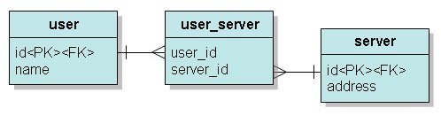

在資料庫表格上要進行多對多對應，可以藉由一個中介表格來完成，也就是藉由多對一、一對多來完成多對多關聯。

多對多由於使用了中介表格，在查詢效率不彰，且在程式的物件模式上，多對多會使得物件與物件之間彼此依賴，並不是一個很好的設計方式，在設計上應避免使用
多對多關係。
如果一定要使用多對多關係的話，在表格上先如下建立：
create table server (
id integer not null auto_increment,
address varchar(255),
primary key (id)
)
create table user (
id integer not null auto_increment,
name varchar(255),
primary key (id)
)
create table user_server (
user_id integer not null,
server_id integer not null,
primary key (user_id, server_id)
)
先設計User類別如下：
package onlyfun.caterpillar;
import java.util.Set;
public class User {
private Integer id;
private String name;
private Set servers;
public User() {}
public Integer getId() {
return id;
}
public void setId(Integer id) {
this.id = id;
}
public String getName() {
return name;
}
public void setName(String name) {
this.name = name;
}
public Set getServers() {
return servers;
}
public void setServers(Set servers) {
this.servers = servers;
}
}
再來設計Server類別如下：
package onlyfun.caterpillar;
import java.util.Set;
public class Server {
private Integer id;
private String address;
private Set users;
public String getAddress() {
return address;
}
public void setAddress(String address) {
this.address = address;
}
public Integer getId() {
return id;
}
public void setId(Integer id) {
this.id = id;
}
public Set getUsers() {
return users;
}
public void setUsers(Set users) {
this.users = users;
}
}
在映射文件上，使用<many-to-many>標籤來完成映射關係：
<?xml version="1.0" encoding="utf-8"?>
<!DOCTYPE hibernate-mapping
PUBLIC "-//Hibernate/Hibernate Mapping DTD 3.0//EN"
"http://hibernate.sourceforge.net/hibernate-mapping-3.0.dtd">
<hibernate-mapping>
<class name="onlyfun.caterpillar.User" table="user">
<id name="id" column="id">
<generator class="native"/>
</id>
<property name="name" column="name"/>
<set name="servers"
table="user_server"
cascade="save-update">
<key column="user_id"/>
<many-to-many class="onlyfun.caterpillar.Server"
column="server_id"/>
</set>
</class>
</hibernate-mapping>
注意到cascade是設定為save-update，因為在多對多的關係中，很少因為刪除其中之一，而所關聯的實體都要一併刪除的，所以設定save-
update，表示在save或update時，一併對關聯的物件進行對應的save或update。
Server.hbm.xml的定義如下：
<?xml version="1.0" encoding="utf-8"?>
<!DOCTYPE hibernate-mapping
PUBLIC "-//Hibernate/Hibernate Mapping DTD 3.0//EN"
"http://hibernate.sourceforge.net/hibernate-mapping-3.0.dtd">
<hibernate-mapping>
<class name="onlyfun.caterpillar.Server" table="server">
<id name="id" column="id">
<generator class="native"/>
</id>
<property name="address"/>
<set name="users"
table="user_server"
inverse="true"
cascade="save-update">
<key column="server_id"/>
<many-to-many class="onlyfun.caterpillar.User"
column="user_id"/>
</set>
</class>
</hibernate-mapping>
一個儲存時的例子如下：
Server
server1 = new Server();
server1.setAddress("PC-219");
server1.setUsers(new
HashSet());
Server
server2 = new Server();
server2.setAddress("PC-220");
server2.setUsers(new
HashSet());
Server
server3 = new Server();
server3.setAddress("PC-221");
server3.setUsers(new
HashSet());
User
user1 = new User();
user1.setName("caterpillar");
user1.setServers(new
HashSet());
User
user2 = new User();
user2.setName("momor");
user2.setServers(new
HashSet());
//
多對多，互相參考
user1.getServers().add(server1);
user1.getServers().add(server2);
user1.getServers().add(server3);
server1.getUsers().add(user1);
server2.getUsers().add(user1);
server3.getUsers().add(user1);
user2.getServers().add(server1);
user2.getServers().add(server3);
server1.getUsers().add(user2);
server3.getUsers().add(user2);
Session
session = HibernateUtil.getSessionFactory().openSession();
Transaction
tx= session.beginTransaction();
session.save(user1);
session.save(user2);
tx.commit();
session.close();
執行後資料庫的內容如下：
mysql> select *
from user;
+----+--------------+
| id |
name
|
+----+--------------+
| 1 | caterpillar |
| 2 |
momor |
+----+--------------+
2 rows in set (0.00 sec)
mysql> select * from user_serv
+----------+-------------+
| user_id | server_id |
+----------+-------------+
| 1
|
1 |
| 1
|
2 |
| 1
|
3 |
| 2
|
1 |
| 2
|
2 |
+----------+-------------+
5 rows in set (0.00 sec)
mysql> select * from server;
+----+-----------+
| id | address |
+----+-----------+
| 1 | PC-219 |
| 2 | PC-221 |
| 3 | PC-220 |
+----+-----------+
3 rows in set (0.00 sec)
|
|